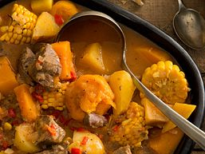
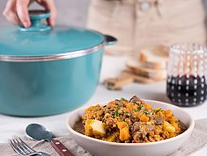
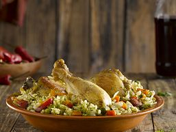
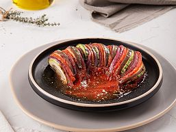
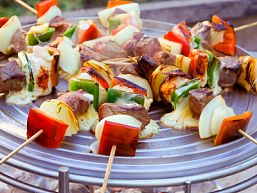
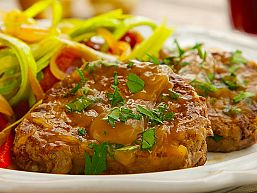
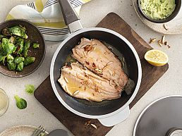
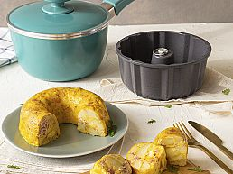

Recetas saladas
Carbonada

- Ingredientes
- 1 Kilo de Paleta 1 Unidad de Cebolla 1 Diente de Ajo 1 Unidad de Pimiento rojo 2 Unidades de Tomate redondo 1/2 Litro de Caldo de verdura 1 Unidad de Hoja de laurel 3 Unidades de Choclo cortados en rodajas 6 Unidades de Damascos secos hidratados 1 Unidad de Batata 1 Kilo de Calabaza 1 Unidad de Papa 1 Cucharadita de Sal fina 1 Cucharadita de Pimienta
- Preparación
- Calentamos la Cacerola tapada 3' a fuego fuerte. Agregamos el aceite y luego la carne cortada en cubos. Doramos a fuego fuerte. Agregamos la cebolla cortada en cubitos y el ajo; tapamos y rehogamos a fuego medio. Añadimos el pimiento y los tomates cortados en juliana. Luego incorporamos el caldo, el laurel, el choclo, los damascos picados, la papa, la batata y la calabaza cortadas en cubos. Tapamos y cocinamos a fuego mínimo hasta finalizar la cocción (aprox. 20').
Arrolladitos de cerdo
.jpg)
- Ingredientes
- Masa 150 grs. de Harina 000 2 Cucharaditas de Pimentón dulce 150 cc. de Agua
- Relleno 2 Cucharadas de Aceite de Oliva Extra Virgen Essen (Varietal Mediterráneo) 1 Unidad de Cebolla picada 1 Unidad de Cebolla de verdeo picada 1 Unidad de 350 grs. de Carne de cerdo picada 2 Cucharadas de Azúcar 4 Cucharadas de Salsa de soja 1 Cucharadita de Sal fina 50 cc. de Salsa teriyaki
- Preparación
- PARA EL RELLENO: Calentamos la Cacerola. Agregamos el aceite, las verduras, la carne y los condimentos; tapamos y rehogamos a fuego medio hasta que la carne se cocine. Retiramos del fuego y reservamos en un bol.
- PARA LA MASA: Mezclamos la harina, el pimentón y el agua hasta obtener una masa casi líquida. Calentamos la Sartén a fuego a mínimo. Pincelamos con la mezcla el fondo de la Sartén (pincelando una capa sobre otra a medida que se vaya secando la anterior, hasta lograr aproximadamente 4 capas). Una vez cocida la masa (resulta similar a la de un crepe), la retiramos con ayuda de una espátula. Repetimos el procedimiento con el resto de la mezcla. Vamos apilando los círculos de masa para que conserven la humedad.
- PARA ARMAR: Tomamos la masa, colocamos 2 cdas de relleno en un extremo y damos una vuelta. Doblamos las puntas hacia adentro. Luego seguimos enrollando hasta formar el arrolladito. Ubicamos todos los arrollados (con los cierres hacia abajo) en la Sartén lubricada, tapamos y cocinamos a fuego mínimo hasta que doren de un lado. Damos vuelta y continuamos cocinando hasta que se doren del otro lado.
Guiso de lentejas

- Ingredientes
- 4 Cucharadas de Aceite de Oliva Extra Virgen Essen (Saborizado Con Albahaca) 1/2 Kilo de Carne roast beef 150 grs. de Panceta 2 Unidades de Chorizo colorado (pelados y cortados en rodajas) 1 Cucharada de Pimentón dulce 1 Cucharadita de Ají molido 2 Unidades de Cebolla (cortadas en cubitos) 2 Unidades de Cebolla de verdeo (cortadas en rueditas) 2 Dientes de Ajo (fileteados) 2 Unidades de Zanahoria 3 Unidades de Papa chicas 1 Unidad de Pimiento rojo 1 Unidad de Pimiento verde 400 grs. de Lenteja (remojadas toda la noche) 250 cc. de Puré de tomate 500 cc. de Caldo de verdura 2 Unidades de Hoja de laurel 1 Cucharadita de Sal fina 1 Cucharadita de Pimienta
- Preparación
- Cortamos la carne y la panceta en cubos. Calentamos la Cacerola tapada 3' a fuego fuerte. Agregamos el aceite y luego la carne, la panceta y el chorizo; cocinamos a fuego medio hasta que doren y suelten la grasa. Agregamos el pimentón, el ají molido, las cebollas, el ajo y el resto de las verduras cortadas en cubitos; mezclamos y rehogamos unos minutos. Incorporamos las lentejas (sin el agua de remojo), los tomates, el caldo, el laurel y los condimentos. Tapamos y continuamos a fuego mínimo hasta que las lentejas estén a punto. Servimos con perejil picado.
Arroz con pollo

- Ingredientes
- 4 Unidades de Presa de pollo (con o sin piel) 125 grs. de Cerveza negra de malta 2 Cucharaditas de Aceite de oliva extra virgen "Olivos del salar" 270 grs. de Arroz blanco 375 grs. de Agua 320 grs. de Arvejas 100 grs. de Zanahoria en cubitos 70 grs. de Pimentón en cubitos 1 Taza de Cilantro en hojas licuado 1 Pizca de Sal fina 1 Pizca de Pimienta
- Preparación
- Maceramos el pollo con la cerveza durante 30'. Calentamos la Sartén tapada 3' a fuego medio. Rociamos con 2 cdas de aceite de oliva. Luego, agregamos el pollo y lo doramos de ambos lados a fuego fuerte. Retiramos y reservamos. En la misma Sartén freímos el arroz y luego agregamos nuevamente el pollo, el agua, las verduras y el cilantro. Condimentamos. Tapamos y continuamos a fuego corona hasta finalizar la cocción
Ratatouille

- Ingredientes
-
Salsa:
3 Cucharadas de Aceite de oliva
3 Unidades de Tomate redondo (pelados y picados)
1 Diente de Ajo (machacado)
1 Cucharadita de Sal fina
- PRatatuille: 1 Unidad de Berenjena (cortada en rodajas finas) 2 Unidades de Zucchini (cortados en rodajas finas) 2 Unidades de Tomate redondo (cortados en rodajas finas) 1 Unidad de Cebolla morada (cortada en rodajas finas) 1 Unidad de Pimiento rojo (cortado en rodajas finas) 1 Unidad de Pimiento verde (cortado en rodajas finas) 1 Unidad de Pimiento amarillo (cortado en rodajas finas)
- Preparación
- Distribuimos en la Sartén el aceite de oliva, los tomates, el ajo y la sal. Cocinamos a fuego medio hasta integrar los sabores. Reservamos. Cortamos todas las verduras en rodajas finas y ubicamos alternadamente del centro a los bordes sobre la salsa. Cocinamos a fuego mínimo hasta finalizar la cocción.
Salteado de cerdo agridulce
- Ingredientes
- 4 Cucharadas de Aceite de Oliva Extra Virgen 600 grs. de Carne de cerdo en tiras finas/carré/solomillo 1 Unidad de Pimiento amarillo 1 Unidad de Pimiento rojo 1 Unidad de Pimiento verde 1 Unidad de Zanahoria 1 Unidad de Cebolla 1 Cucharada de Jengibre rallado 3 Cucharadas de Azúcar rubia 100 cc. de Vino blanco 200 grs. de Brotes de soja 4 Cucharadas de Salsa de soja 4 Cucharadas de Semillas de chía sésamo o amapola
- Preparación
- Calentamos la Sartén 3’ a fuego fuerte. Incorporamos el aceite de oliva, la carne y revolvemos hasta que se dore. Bajamos a fuego medio y agregamos todas las verduras cortadas en fina juliana junto con el jengibre. Revolvemos. Añadimos el azúcar, el vino blanco, los brotes y la salsa de soja; dejamos evaporar el alcohol. Servimos con una lluvia de semillas.
Brochettes de pollo y carne

- Ingredientes
- 2 Unidades de Cebolla 1 Unidad de Pimiento rojo 1 Unidad de Pimiento verde 150 grs. de Queso duro 1 Unidad de Pechuga de pollo 500 grs. de Lomo 1 Pizca de Sal fina 1 Pizca de Pimienta 1 Pizca de Nuez moscada 1 Cantidad Necesaria de Aceite de Oliva Extra Virgen 10 Unidades de Palillos
- Para el merengue 4 Unidades de Huevo Claras de 240 grs. de Azúcar 80 cc. de Agua)
- Preparación
- Calentamos con abundantes brasas el Grill multifunción de 5' a 10'. Cortamos la cebolla en cuartos y el resto de los ingredientes en cubos homogéneos. Aceitamos los palillos para que se deslicen los ingredientes con facilidad al colocarlos y después de la cocción. Insertamos los ingredientes de forma alternada, dejando unos centímetros en los bordes para maniobrar durante la cocción. Rociamos las brochettes con aceite de oliva y condimentamos. Distribuimos sobre el Grill de forma que se unan todos en el medio. Rotamos a medida que se doren hasta lograr una cocción pareja.
Lomo a la estanciera

- Ingredientes
- 50 cc. de Aceite de Oliva Extra Virgen Essen (Varietal Mediterráneo) 1500 grs. de Lomo cortado en medallones 1 cm 500 grs. de Molleja cortadas en medallones de 1 cm 2 Unidades de Morrón rojo cortados en cubitos 2 Unidades de Cebolla cortadas en juliana 1 Unidad de Puerro cortado en juliana 300 cc. de Vino tinto 150 cc. de Caldo de carne o verdura 1 Cucharadita de XPerejil Fresco picado 1 Cucharadita de Sal fina 1 Cucharadita de Pimienta 1 Pizca de Aceto balsámico
- Preparación
- Calentamos 5' a 10' el Disco. Incorporamos el aceite de oliva, los medallones de lomo y en el centro las mollejas. Sellamos. Damos vuelta las carnes y agregamos las verduras junto con el vino. Dejamos reducir 1’. Añadimos el caldo, condimentamos y continuamos la cocción hasta que la carne esté cocida (si fuera necesario hidratamos con más caldo). Al retirar del fuego agregamos el perejil picado y las gotitas de aceto balsámico. Servimos la carne con la guarnición de verduras.
Lasagna de vegetales
.jpg)
- Ingredientes
- 2 Unidades de Berenjena 2 Unidades de Zucchini 6 Unidades de Hongo portobello 1 Cucharada de Aceite de Oliva Olivos del Salar 250 grs. de Espinaca 1/2 Litro de XSalsa Blanca 18 Unidades de Masa hojaldre 200 grs. de Queso brie 80 grs. de Queso parmesano 1/2 Litro de Salsa de tomate 1 Cucharadita de Sal fina (a gusto) 1 Cucharadita de Pimienta (a gusto)
- Preparación
- Cortamos las berenjenas y los zucchinis en láminas. Cortamos los portobellos en cuartos. Calentamos la Cacerola 3' a fuego fuerte. Rociamos con aceite de oliva y doramos las verduras de ambos lados. Condimentamos con sal y pimienta. Cortamos la espinaca en juliana y la agregamos a la salsa blanca. Cubrimos el fondo de la Cacerola con salsa blanca. Hidratamos las planchas de masa en agua caliente y distribuimos una parte cubriendo la salsa. Sobre ellas colocamos una capa de berenjenas, zucchinis y portobellos; cubrimos con rodajas finas de queso brie, luego con un poco de salsa de tomate, más salsa blanca y parmesano rallado. Tapamos con otra capa de masa hidratada y formamos más capas de ingredientes. Terminamos la lasagna sin tapar con masa. Tapamos la Cacerola y cocinamos a fuego mínimo por unos 30' o 35' aproximadamente.
Truchas con salsa de manteca y almendras

- Ingredientes
- 2 Unidades de Truchas Frescas 200 grs. de Manteca 80 grs. de Almendras Cantidad Necesaria de Repollito de bruselas 2 Cucharadas de Aceite de oliva 200 grs. de Habas 100 cc. de Crema de leche Cantidad Necesaria de Sal fina Cantidad Necesaria de Pimienta
- Preparación
- Fundir la manteca en la Sartén y dorar la trucha de ambos lados. Condimentar con sal y pimienta, agregar las almendras picadas y tapar con el fuego apagado. Hervir en abundante agua con sal los repollitos de bruselas y una vez blanqueados retirar y dorar en la Sartén con aceite de oliva. Reservar. Hervir las habas y una vez listas escurrir y procesar con la crema de leche. Salpimentar. Servir las truchas con la manteca de almendras, el puré de habas y los repollitos salteados.
Tortilla rellena de queso

- Ingredientes
- 2 Unidades de Papa en cubitos 1 Unidad de Cebolla chica, picada 100 grs. de Jamón cocido en cubitos 5 Unidades de Huevo 50 grs. de Queso mozzarella Cantidad Necesaria de Sal fina Cantidad Necesaria de Pimienta
- Preparación
- Salteamos en la Cacerola precalentada con aceite la cebolla y las papas hasta que estén tiernas. Mezclamos en un bowl la cebolla, las papas, el jamón, los huevos, sal y pimienta. Volcamos la mitad de la preparación en el Savarín lubricado con aceite. Agregamos el queso mozzarella cortado en bastones. Terminamos la tortilla añadiendo la otra mitad de la preparación. Cocinamos 35’ a fuego mínimo.